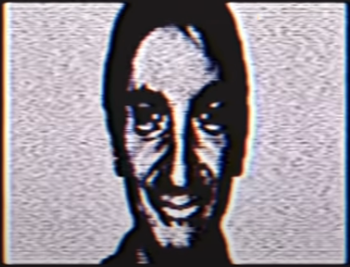

In analog horror people get creative with utilizing old cam recorders that have been found lying around homes and draws on the 2000s nostalgia sometimes using cassettes and tape to record and corrupt the nostlagia into something more eerie.
The mandela catalogue's popularized this notion of utilizing legacy hardware and making the most of old equipment. This in conjunction with the audio manipulation and distorition/sound design is what created a creepy atmosphere and extrapolated it to what it is now.
